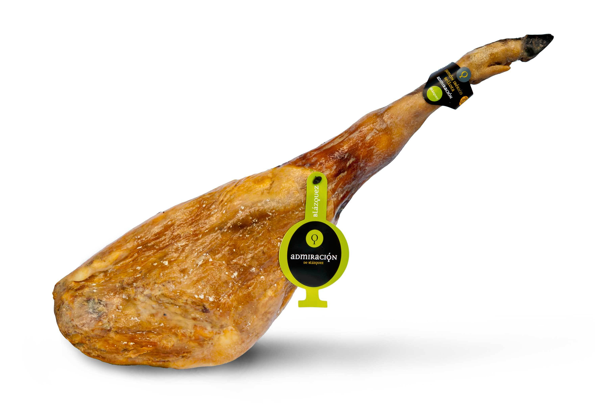
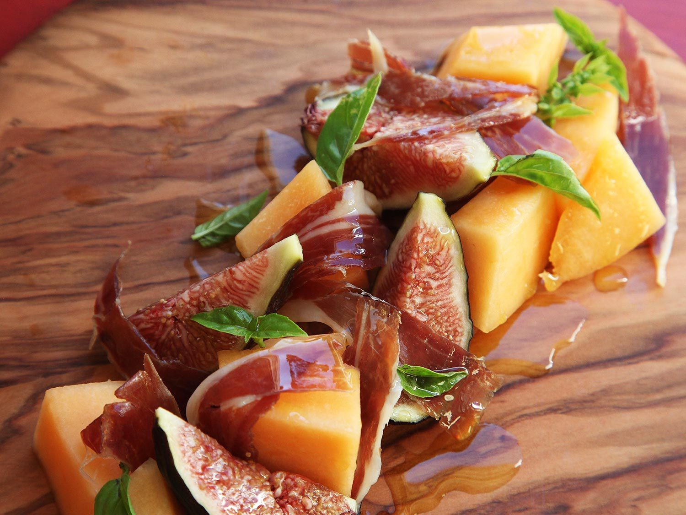
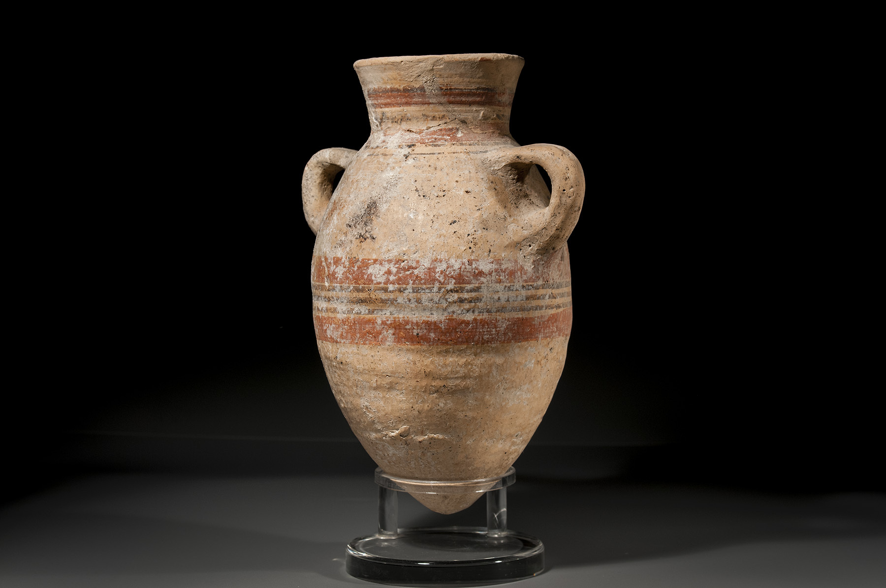
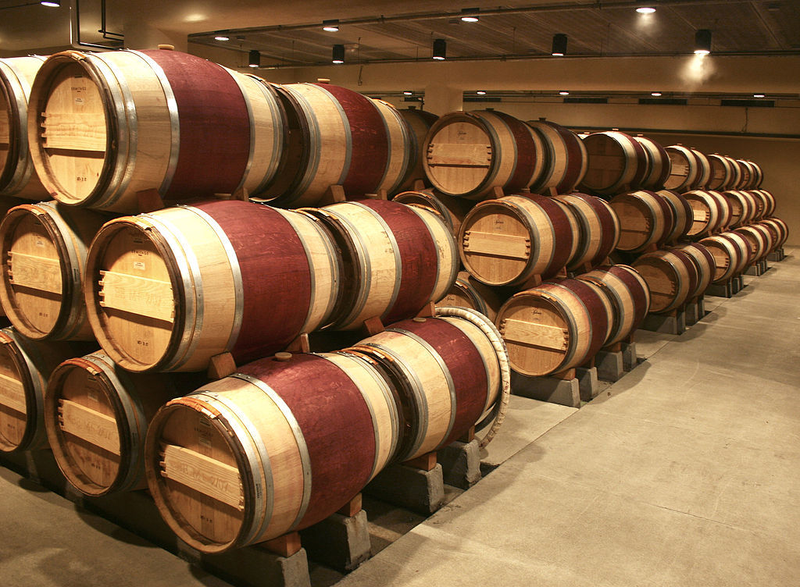
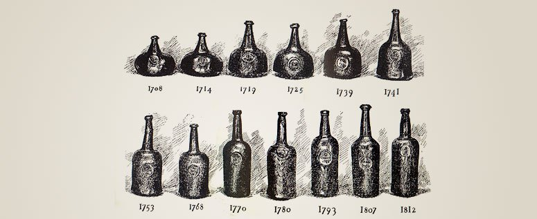
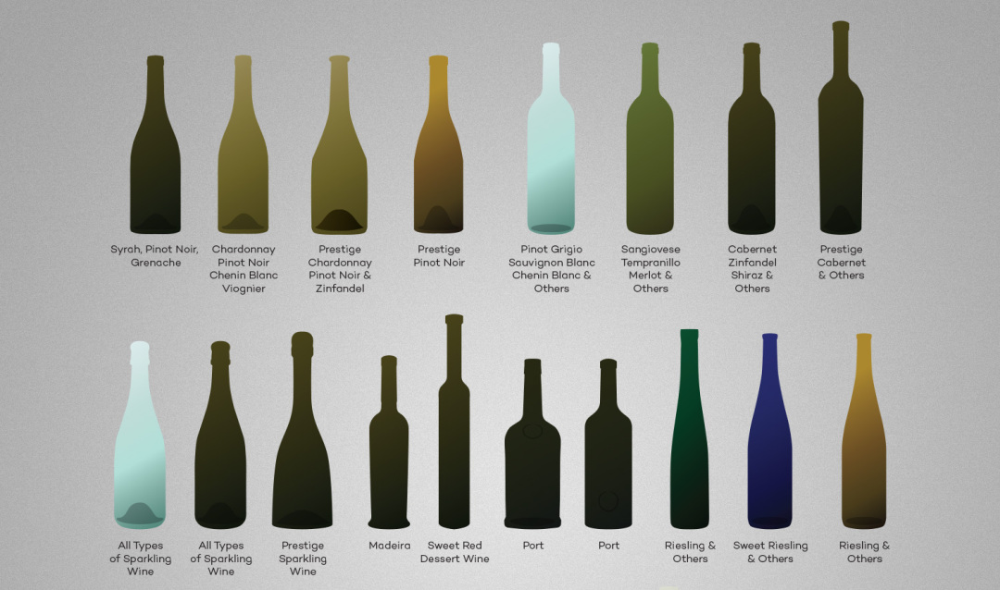

chapter11.1--handout
Background Information
Spanish hams (Jamón) 西班牙火腿
大巴在中途停在了一个旅馆门前，Jake便走进去买酒喝，这里的描述中提到了在屋顶上挂着的除了一串串绳底帆布鞋（clusters of canvas rope-soled shoes）, 还有hams（火腿）这种食物。火腿其实可以算是西班牙的一大在世界范围内都闻名的特产了，尤其是那种整根连蹄带骨的生火腿（也被看作是这个国家的象征图腾）。
火腿在西班牙语里是“Jamón”（音“哈蒙”），虽然中文译成了“火腿”，但其实它跟我们传统认知里的火腿并不是同一种类型。中国的火腿在制造过程中会用到烟或者火来加工猪肉，但西班牙火腿采用盐腌风干，并非熟肉，而且为了防止氧化，在发酵初期就会给火腿抹上猪油，因此西班牙的火腿是可以生吃的。

还有一点需要注意的是，Jamón是用猪的后腿（the hind leg）制成，如果是用猪的前腿（the front leg）制作的呢，则叫Paleta. 最著名的Jamón生产地，是在西班牙南部的安达卢西亚省内的一个叫乌爱巴的小县城内。乌爱巴制作Jamón的历史悠久，早在罗马时代就开始研究和制作。
除了火腿本身的美味，观看厨师切片也是一种顶级享受，火腿最常见的吃法是切片生食，也可搭配面包制成三明治，火腿配蜜瓜也是地中海地区的一道特色菜肴。

一般切肉师傅有一套专门工具：一个架子，数把肉刀。衡量切肉师傅的技术的标准就是看谁切得薄，面积大小要绝对均匀。
Vocabulary
powder
n. 粉，粉末；粉状物质（a dry substance in the form of very small grains）
vt. 在…搽粉（to put powder on something, especially your skin）
原文：and as we went out along the road with the dust powdering the trees and down the hill... 当我们顺着大道直驶，尘土扑打在树上……
💧powder 作动词一般是指“往（某物，尤其是脸）上抹粉”，这里形容车驶过后扬起的尘土落在树上，就像给树扑粉一样。
💧说到powder表示“抹粉”，大家可以来猜一猜powder one's nose是什么意思呢？虽然在字面上可以理解为“补妆”，但它其实是一句委婉语，也就是借补妆来说自己要去上厕所，比如：I’m just going to powder my nose and I’ll be with you in a minute.
当然现在一般会更直接地说go to the bathroom.
patch
n. 补丁（a piece of material that you use to cover a hole in something）
斑点；小块（a small area of something that is different from the area around it）
原文：Now there were only patches of grain on the bare hillsides and on each side of the water-courses. 现在光秃的山坡上和河道两侧只有零星的几块庄稼地。
💧patch 在这里表示“（用来种水果或蔬菜的）小块土地”（a small area of ground for growing fruit or vegetables），比如自家后院里围出来的一小块菜地就可以说是a little vegetable patch in the backyard.
Crush Your Problems
1、Robert climbed down and I fitted into the place he had saved on the one wooden seat that ran across the top.
罗伯特爬下车去，我在横跨顶层的木制长椅上他刚才替我占的位置落了座。
💧表达精讲
run across 在这里表示“横跨”，run在这里表示“延伸”（to extend）, 也可以用来形容路或者山脉，比如：The Sierra mountain range runs the length of the north west coast of Majorca.（谢拉山脉横贯马略卡岛西北海岸。）
2、He was a young fellow and he held the wine-bottle at full arms' length and raised it high up, squeezing the leather bag with his hand so the stream of wine hissed into his mouth.
这是一位年轻小伙，他伸直双臂，高高举起酒袋，用一只手捏着这皮袋，于是酒就咝咝地射进他嘴里。
💧表达精讲
①hold sth at full arms' length 表示“伸直手臂举起某物”，at full arms' length可以理解为stretch one's arms straight（也就是“把整条手臂都拉伸直了”的意思哦~）
②squeeze 表示“（用手指）挤压，紧捏”这个动作，比如：Squeeze a bit of lemon juice onto the fish.（挤点柠檬汁在鱼上。）
③hiss 是一个拟声词，也就是“咝咝（的声音）”，水碰到热油或者减速时轮胎和地面摩擦发出的声音都可以用hiss来形容，比如：The tyres of Lenny's bike hissed over the wet pavement as he slowed down.（兰尼减速时，他自行车的两个轮胎在潮湿的路面上发出嘶嘶声。）
这里形容的就是用手从皮袋里挤出来的酒形成一条细柱时咝咝作响。
3、He held the bag out there, the wine making a flat,hard trajectory into his mouth, and he kept on swallowing smoothly and regularly.
他伸手高擎着酒袋，袋中的酒形成一条平顺的轨迹猛烈地喷进他的嘴里，他不紧不慢地一口口把酒咽下。
💧表达精讲
①held the bag out there 指“他一直保持着高举酒袋的这个动作”；
②making a flat, hard trajectory into 直译可能就变成了“形成一条平直、坚硬的轨迹地进入”（trajectory表示物体射向或抛向空中时形成的“轨迹”），这样理解当然是不得其意的，那么这里到底指什么呢？
flat 虽然可以指“水平的，平直的”（horizontal），但联想到这里酒袋举得很高，显然是矛盾的；flat的另一层意思是“平滑的”（smooth），延伸一下，a flat trajectory就可以表示这条轨迹是“连续平顺的”，而不是断断续续的（可以适当发挥想象来理解）；
hard 在这里并不是直接修饰trajectory，它形容的其实是酒射进嘴里这个动作，所以我们可以把它解释为作副词，表示“用力地，重重地”（with a lot of force）, 比如hit the ball hard表示“用力击球”；
我们可以再改写一下来帮助理解：The wine shooted into his mouth hard by making a flat trajectory.
4、Then he bit the stream off sharp, made a quick lift with the wine-bag and lowered it down to the owner.
然后他突然刹住酒流，倏地把酒袋朝天竖直，然后送回到主人手里。
💧表达精讲
bit the stream off sharp “突然刹住酒流”，bite off 本义是“咬断”（to use the teeth to pull off sth）, 比如：Once the lollipop was soft enough, I bit it off the stick.（当棒棒糖足够软的时候，我就把它从棍子上咬下来。）
这里的bite off是指刹住、止住酒流（其实就是突然把嘴闭上）；sharp表示“猛地”，比如turn sharp就是指“急转弯”。
5、Up here the country was quite barren and the hills were rocky and hard-baked clay furrowed by the rain.
在这儿一带，土地相当荒芜，满山顽石，烤硬的泥土被雨水冲出道道沟壑。
💧表达精讲
①up 一般表示在高处，比如up in the bedroom就是指“在楼上的卧室”；这里之所以说up here是因为这一带地势比较高，相对其他地方来说就是up啦~
②and hard-baked clay furrowed by the rain 这个结构可以看作是省略了furrowed前面的was（不必细究语法哦~这里并不影响对意思的理解）；furrow我们在前面介绍过，它表示“在……开出沟槽”（to make a wide deep line in the surface of something），这里就是指原本烤硬的泥土因为雨水的冲刷而变成沟渠横生的样子。
6、A stream went through the centr of the town and fields of grapes touched the houses.
一条小溪穿过小镇中心，房屋后边紧接着一片片葡萄园。
💧表达精讲
touch 有“触碰，接触”的意思（if two things touch, or one thing touches another thing, they reach each other so that there is no space between them）, 在这里也就是指“刚好紧挨着”。
我们之前介绍过的be adjacent to也是同样的意思哦~比如：The building is adjacent to the library.（这栋建筑紧挨着图书馆。）
Content Analysis
今天的内容重点在于对西班牙巴斯克这一片地区的风景和民风的展现。Jake和Bill告别Cohn坐上了大巴准备前往布尔戈特（Burguete）钓鱼，大巴上拥挤着当地的巴斯克人（the Basques）, 他们大部分是农民（They were peasants going up into the hills）, 心思简单淳朴，并且待人大方热情。
如果说在巴黎的故事色彩是灰色的，那么进入这一部分则突然敞亮鲜艳了起来。作者在笔调上也更为生动轻快。我们来看两个Jake和Bill以及当地人非常有意思的互动——
💧Clue 1: The Basque teases Jake but in a kind way.
Evidence 1: He offered the wine-skin to Bill and to me, and when I tipped it up to drink he imitated the sound of a klaxon motor-horn so well and so suddenly that I spilled some of the wine, and everybody laughed.
他把酒袋递给比尔和我，我把酒袋倒过来正要喝的当儿，他模仿汽车电喇叭，嘟嘟的叫了一声，学得那么逼真而且来得那么突然，使我把酒泼掉了一些，大家哈哈大笑。
Evidence 2: He apologized and made me take another drink. He made the klaxon again a little later, and it fooled me the second time. He was very good at it.
他表示歉意，让我再喝一次。一会儿他又学了一遍，我再次上当。他学得真是像极了。
这位巴斯克人和Jake以及Bill并不相识，但非常热情地主动和他们分享自己的酒袋，虽然最后不无善意地捉弄了Jake一番。
💧Clue 2: Another Basque shows Bill how to drink from a wine-skin properly.
Evidence 1: "No! No!" several Basques said. "Not like that." One snatched the bottle away from the owner, who was himself about to give a demonstration.
“不对！不对！”有几个巴斯克人说。“不是那么喝的。”酒袋的主人正要亲自给别尔做示范，另一个人从他手里把它抢过去了。
Evidence 2: "Hey!" the owner of the bottle shouted. "Whose wine is that?"
The drinker waggled his little finger at him and smiled at us with his eyes.
“嗨！”酒袋的主人喊道。“你喝的是谁的酒啊？”
喝酒的小伙用小手指对他点点，眼睛里带着笑意，看看我们。
Bill不会巴斯克人那一套用酒袋喝酒的方法，喝罢下巴上还留着几滴（When he stopped drinking and tipped the leather bottle down a few drops ran down his chin）, 这时候另一个巴斯克年轻小伙抢着要给他示范。正当他喝得酣畅痛快的时候，酒袋的主人便半玩笑半认真地抱怨了一句，这个年轻人腼腆地马上止住。
如果和之前发生在巴黎的人物对话进行比较，大家会发现这里作者着重刻画了巴斯克人在日常交往中的坦诚和直接（比如这里酒袋的主人和另一个巴斯克小伙的对话），并且人物的所有反应都是真实并且毫无掩饰和隐藏的。那么这片土地以及接下来的旅途又会对我们的主角们带来什么影响和改变呢？在接下来的内容里作者会为我们慢慢揭晓。
Today's Bonus
💧葡萄酒瓶的演变历史
Jake和Bill在出发前，坐在大巴上和巴斯克人一起喝酒，不知道大家有没有留意到他们用来装葡萄酒的容器叫作wine-skin呢？这里skin指的是一种用羊皮做成的酒囊。这种酒囊携带方便，并且相对玻璃来说造价更便宜。
其实在玻璃瓶普及之前，盛装红酒的容器也经历了漫长的演变历史，今天的彩蛋我们就一起来看一看~
1. Kvevri 奎弗瑞陶罐
奎弗瑞（Kvevri）是一种蛋形的大型陶罐（earthenware），是目前已知最早用于盛装葡萄酒的容器，距今已有5000多年的历史。它最早是用于发酵和熟成传统的格鲁吉亚葡萄酒（traditional Georgian wine）. 虽然和古希腊罗马时期的双耳细颈陶罐（Amphorae）（我们在下面会介绍到~）在功能和材质上存在相似性，但奎弗瑞没有前者方便运输的握柄。
陶罐的优点是具有透气性，这意味着酒液在发酵和熟成的过程中都会接触氧气，氧化程度高，酿出的葡萄酒颜色也会更深。在发酵和熟成葡萄酒的过程中，奎弗瑞会被埋在地下（buried below ground）. 这一做法在格鲁吉亚延续至今。
2. Amphora 双耳瓶
罗马人对陶罐进行了改造，发明了双耳瓶（Amphora）作为储存、运输葡萄酒的器皿，并将双耳瓶推广开来。双耳细颈瓶虽然外形不错，但是出奇得沉重，运输不便，而且粘土材料影响酒的味道。

当年凯撒大帝率军出征高卢，一路用葡萄酒搞赏军土，提振士气。20世纪，有人在法国南部的Narbonne市一个古罗马军营遗址处进行发掘，揭开一座小山的表土层后赫然发现，所谓的“山”其实是用数万个双耳瓶堆出来的。由此可以看出当年的罗马大军消耗了多少葡萄酒。
3. Oak barrel 橡木桶
橡木桶（Oak barrel）最早是用来储存和运输（storage and transportation）货物的。因为其材料易得、方便运输等特性，所以在公元2世纪开始逐渐取代陶罐，成为主流。

橡木的还可以让酒具有独特的风味（impart various qualities to wine）. 比如它的透气性可以使酒液发生适当的氧化效应，从而使葡萄酒口感更加圆熟饱满；烘烤过的橡木还会为葡萄酒带来独特的香气。同时，橡木桶营造的微氧环境有利于色素和单宁的聚合反应，使酒液的色泽更加鲜明和稳定。
如果在酒瓶上看到“Barrel Fermented”的字样就知道这瓶酒是用橡木桶酿造的啦~
4. Wineskin (Bota bag) 酒囊
原文中出现的wineskin也叫bota bag, 这是西班牙（巴斯克地区）传统的一种盛装液体的容器（a liquid receptacle）. 一般由动物皮革制成（尤其是山羊皮）。
直到17世纪玻璃工艺成熟之前，这种羊皮酒囊都非常盛行。
5. Glass bottle 玻璃瓶
虽然玻璃瓶在今天看来再寻常不过，当它的诞生在当时非同凡响。通过玻璃瓶和软木塞的结合，葡萄酒得到了更好的储存 ，其意义不亚于保存人类文化的印刷术的发明。最早由于技术所限，玻璃瓶身多为不规则的球形或洋葱形。随着工艺技术的不断提高，酒瓶造型才逐渐接近今天的形制。

为了使酒能水平放置，便于酒的熟化，瓶子逐渐由开始的圆肚形演化成了今天的细长瓶型。不同的葡萄酒产区使用的瓶型也各具特色，比如瓶肩的倾斜角度也会因不同形式风格的酒而有不同。但红酒瓶的颜色一般都是深绿色或深棕色，为的是防紫外线。因为紫外线会加速葡萄酒的分子运动，破坏酒体的稳定性。
